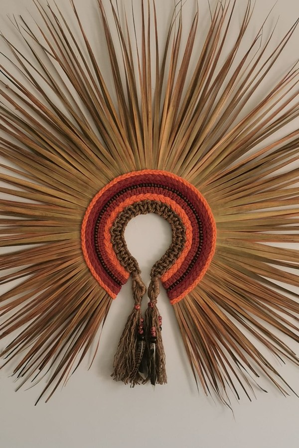
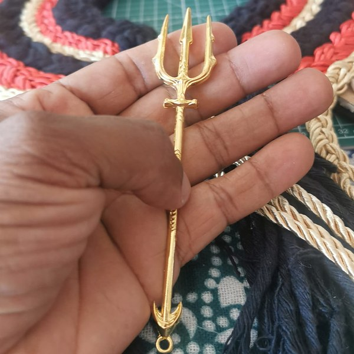
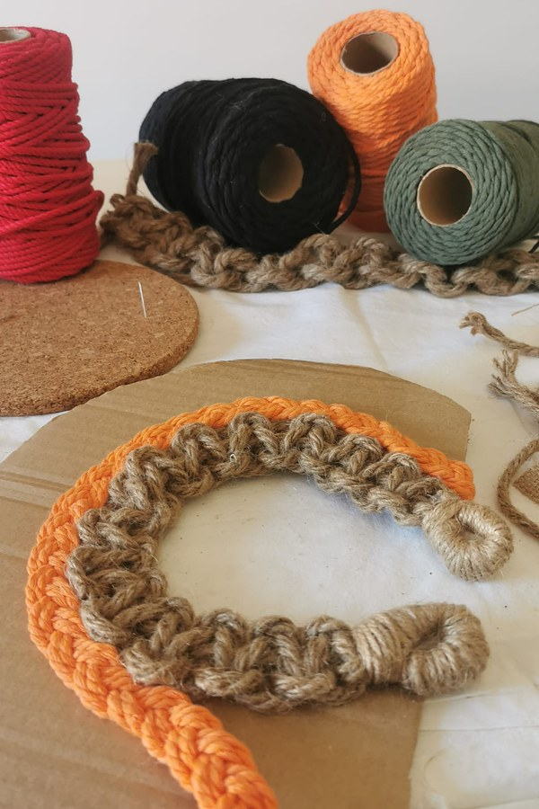
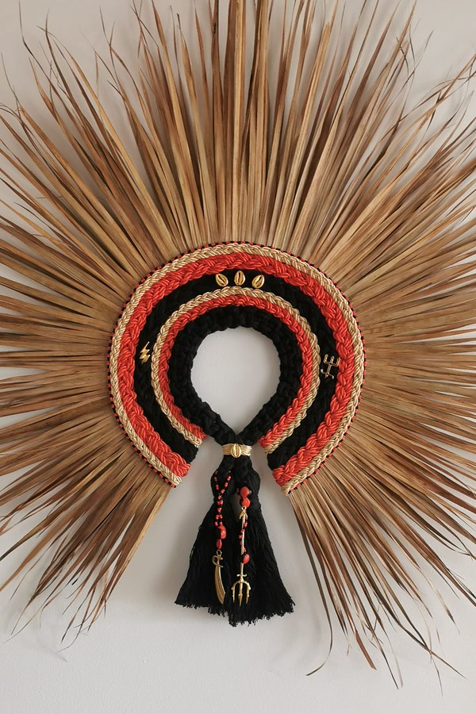

Cocares
Decoração e proteção
A Fabi também faz cocares. São peças de palha, búzios, sementes e penas, montadas para uma pessoa e com uma intenção.
Um cocar é ao mesmo tempo uma peça de decoração e uma peça de proteção. Representa a força de um caboclo ou de um orixá, e fica num altar ou no lugar que a pessoa escolher.
"É uma representação, ela não vai colocar aquilo como ídolo. Vai proteger, sim, claro. Mas é uma arte, é uma decoração. Uma decoração com uma intenção de proteção."

Na energia de quem o pede
Cada cocar começa com um pedido. A Fabi faz a peça para essa pessoa: na cor, na força e na intenção que ela traz.
"Quando a pessoa me pede o cocar, eu vou fazer o cocar na energia dela. Se ela me pedir o cocar de algum orixá, eu vou fazer na energia da pessoa e na energia do orixá."

A Fabi pede sempre à pessoa que oiça a música, para sentir a ligação com os caboclos. Durante o trabalho, a pessoa não está presente, mas está no pensamento da Fabi do princípio ao fim.
Quando o cocar é um presente, a Fabi não fala com quem o vai receber. Guarda essa pessoa em mente, e a proteção que lhe é destinada.
Cada passo no rezo
Muitas vezes, o pedido acompanha a Fabi numa cerimónia, no rezo do rapé ou do cachimbo. É aí que ela pede orientação para a peça.
"Eu peço orientação, e ali é anunciado para mim a maneira que é para montar o cocar."

O trabalho começa com uma consagração de rapé. Depois, etapa a etapa: separar as cores, separar as palhas, riscar, medir, cortar. Se a orientação o pedir, juntam-se sementes ou contas. No fim vem o acabamento: impermeabilizar, colar, envernizar.
"Cada passo da montagem do cocar é feita no rezo. Mesmo que seja uma coisa muito simples, um riscar, um cortar, separar as palhas."
Do primeiro corte ao último verniz, tudo é feito com atenção e entrega.
Um tempo antes de partir

Quando o cocar está pronto, não parte logo. A Fabi guarda-o consigo durante algum tempo. Continua a rezar com a peça por perto, também nas cerimónias com a medicina.
"Quando ele está pronto, eu deixo ele um pouco aqui comigo. Ainda faço rezo, eu mando energia, para que quando a pessoa receba essa peça, que seja realmente a proteção dela."
Só então o cocar segue para a pessoa a quem pertence.
Peças
As peças que se seguem foram feitas assim, cada uma para alguém.
Quer pedir um cocar à Fabi?
Conte-lhe para quem é, que força procura, se é um presente. A peça começa nessa conversa.
Pedir um Cocar